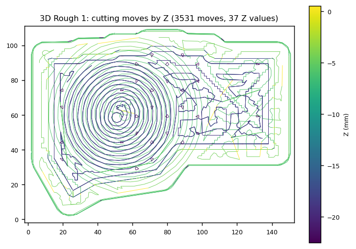
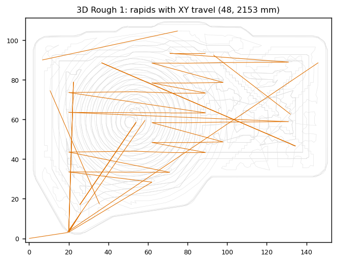
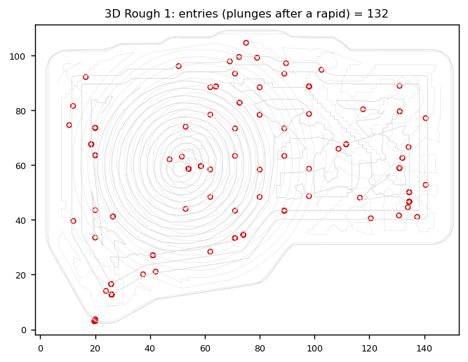
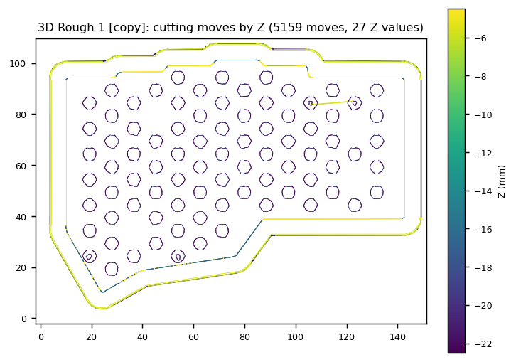
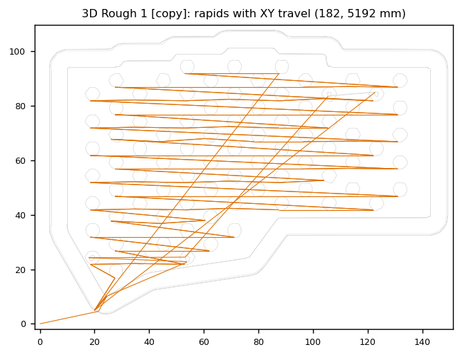
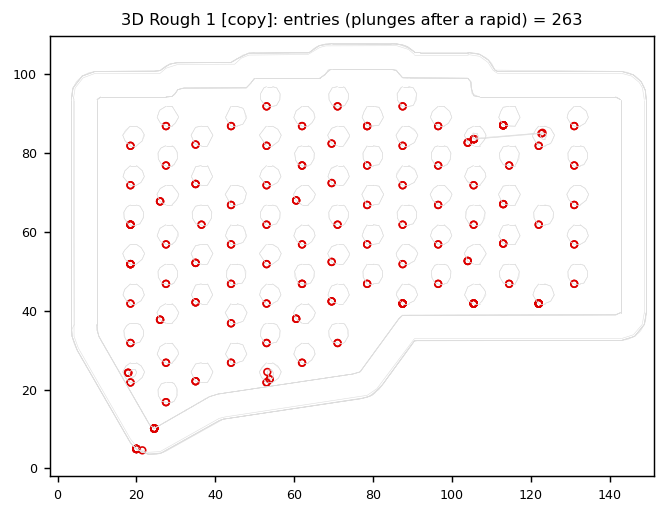

corne / agent
| project (rough ops only) | cycle time 2112 s; cutting 38487 mm; rapid 17531 mm; air cut 55.2% of runtime; collisions 0 (rapid 0); verdict: WARNING: 55.2% air cutting of total runtime |
|---|
| op | entries (G-code) | cut XY mm (G-code) | rapids with XY / mm |
|---|---|---|---|
| 3D Rough 1 | 132 | 15053 | 48 / 2153 |
| 3D Rough 1 [copy] | 263 | 8003 | 182 / 5192 |
CLI hard-bar findings (Safety / Act on)
- "3D Rough 1 (copy)": the rough leaves 1257 island(s) standing more than 0.80 mm above its target (the floor its plan can reach with its tool, 0.50 mm stock to leave in it), 1175 of them against a wall: 3652.5 mm2 in all at cell 0.300 mm. Free islands first, then the ones at a wall, tallest first in each group: 13.00 mm high, 0.30 mm wide, 0.5 mm2 at (102.9, -22.3); 9.75 mm high, 0.30 mm wide, 0.7 mm2 at (119.7, -22.9); 8.12 mm high, 0.30 mm wide, 0.3 mm2 at (82.2, -64.9); 4.50 mm high, 1.04 mm wide, 2.8 mm2 at (146.4, -64.6); 4.50 mm high, 0.30 mm wide, 0.6 mm2 at (146.4, -17.5); 3.62 mm high, 1.40 mm wide, 2.9 mm2 at (18.9, -55.3); 3.50 mm high, 1.60 mm wide, 3.7 mm2 at (28.5, -91.0); 3.50 mm high, 1.60 mm wide, 3.4 mm2 at (37.2, -85.9); 3.50 mm high, 1.50 mm wide, 3.2 mm2 at (45.3, -80.8); 3.50 mm high, 1.50 mm wide, 3.6 mm2 at (54.0, -76.0); and 1247 more. 412 island(s) stand taller than one depth per pass plus one cell (3.30 mm): a later pass meets more than one commanded step there.
- "3D Rough 1": the rough leaves 457 island(s) standing more than 0.80 mm above its target (the floor its plan can reach with its tool, 0.50 mm stock to leave in it), 404 of them against a wall: 6832.7 mm2 in all at cell 0.300 mm. Free islands first, then the ones at a wall, tallest first in each group: 16.50 mm high, 7.59 mm wide, 1478.2 mm2 at (28.8, -16.6); 16.50 mm high, 7.59 mm wide, 51.5 mm2 at (105.3, -24.7); 15.75 mm high, 7.50 mm wide, 50.4 mm2 at (18.6, -55.6); 8.12 mm high, 0.30 mm wide, 0.3 mm2 at (82.2, -64.9); 6.66 mm high, 0.30 mm wide, 0.4 mm2 at (135.0, -22.9); 6.25 mm high, 7.12 mm wide, 49.0 mm2 at (122.1, -41.5); 6.25 mm high, 0.90 mm wide, 5.8 mm2 at (135.3, -31.9); 4.50 mm high, 1.04 mm wide, 2.8 mm2 at (146.4, -64.6); 4.50 mm high, 0.30 mm wide, 0.6 mm2 at (146.4, -17.5); 4.16 mm high, 1.04 mm wide, 7.6 mm2 at (22.2, -22.9); and 447 more. 12 island(s) stand taller than one depth per pass plus one cell (6.30 mm): a later pass meets more than one commanded step there.
- crosses standing material deeper than this pass was planned to cut: 2.6% of cutting samples remove more than the commanded 3.00 mm depth per pass by over 0.300 mm, peaking at 15.00 mm
- WARNING: high air cutting on '3D Rough 1' is 45% air-cut of total runtime — Tighten the boundary, lower the stock-top, or pre-rough with a faster op so the finishing pass doesn't traverse uncut material. Negligible for sparse projection ops.





